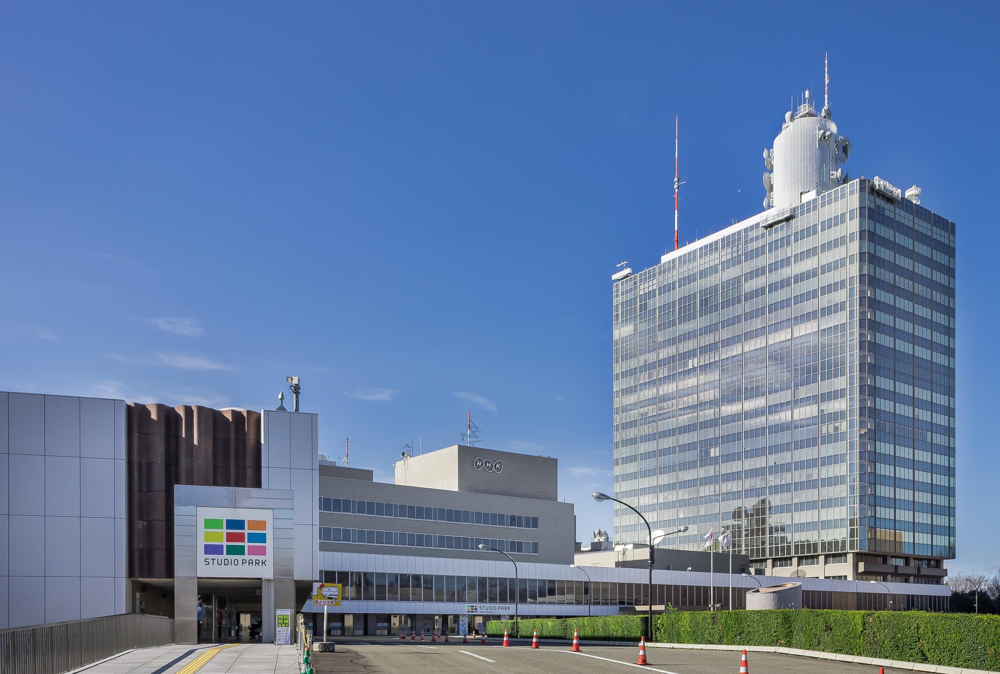

NHK, also called the Japan Broadcasting Corporation and shortened from Nippon Hoso Kyokai, is a Japanese government-owned public broadcaster. NHK, which has always been knwon by this romanized initialism in Japanese, is a statutory corporation funded by viewers' payments of a television license fee.
NHK's earliest forerunner was the Tokyo Broadcasting Station (東京放送局), founded in 1924 under the leadership of Count Gotō Shinpei. Tokyo Broadcasting Station, along with separate organizations in Osaka and Nagoya, began radio broadcasts in 1925. The three stations merged under the first incarnation of NHK in August 1926.[6] NHK was modelled on the BBC of the United Kingdom,[4] and the merger and reorganisation was carried out under the auspices of the pre-war Ministry of Communications.[7] NHK's second radio network began in 1931, and the third radio network (FM) began in 1937.
Just a link